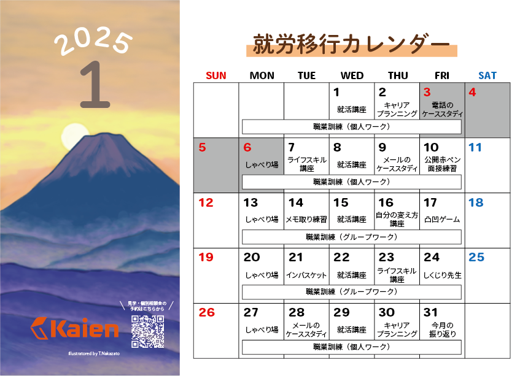
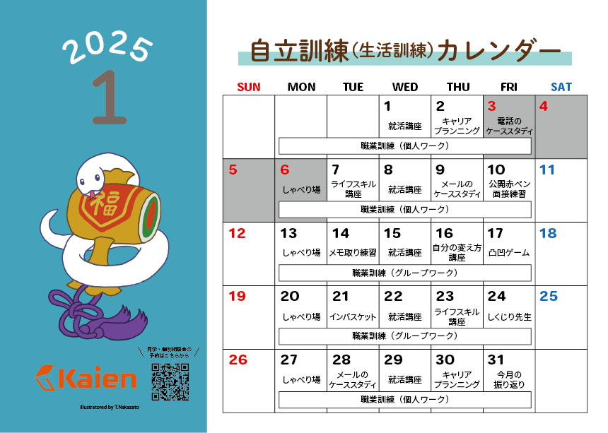
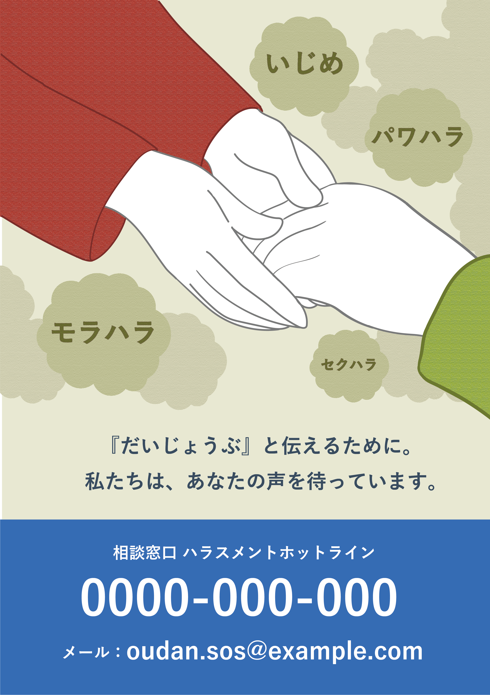

マイナーリーグバナー広告
制作日：1枚目 2023年12月1日 2枚目 2024年4月17日制作期間：1枚目 1日間(3時間) 2枚目 9日間(14時間)
使用ツール：Photoshop、Illustrator
障がい者雇用の求人サイトであるマイナーリーグのバナー広告という想定で制作したバナー画像です。
発達障害者向けの求人に特化したイメージが伝わるようキャッチコピーを考え、フリーのイラスト、
写真を組み合わせてデザインしました。


SNSアイキャッチ画像
制作日：1枚目 2023年11月30日 2枚目 2024年4月18日制作期間：1枚目 2日間(3.5時間) 2枚目 4日間(6時間)
使用ツール：Photoshop、Illustrator
IT登竜門というITスキル講座のSNS宣伝用画像という想定で制作したアイキャッチ画像です。
ITスキル講座をイメージしたフリーのイラストや写真、フォントを意識して組み合わせてデザインしました。

Kaienブログ用アイキャッチ画像
制作日：2024年7月17日 制作期間：8日間(12.5時間)使用ツール：Photoshop、Illustrator
Kaien訓練生が運営するオンラインショップのブログに掲載する、
「たった1分でできて一生が変わる魔法の習慣」という書籍の内容を紹介するための
アイキャッチ画像です。書籍に掲載された名言のうち、「いい気の場所に移動する」という
言葉の意味から、気分を変えられる場所に移動するイメージを連想し、
歩く足のシルエットと様々な場所のフリー写真を組み合わせて制作したデザインです。

Denpukuチラシデザイン
制作日：2024年11月12日 制作期間：12日間(17時間)使用ツール：Photoshop、Illustrator
Kaienが取り組んでいるDenpukuというプロジェクトで作成した漆塗りの箸の販売を
通販サイトで開始したことを、Kaien利用者にお知らせするためのチラシのデザインです。
和風のイメージを意識しつつ、内部向けのチラシのため、ポップな印象になるようデザインしました。


訓練カレンダーチラシデザイン
制作日：2024年7月度版 2024年5月16日 2025年1月度版 2024年11月15日制作期間：7月度版 10日間(18.5時間) 1月度版 7日間(18.5時間)
商用利用期間：7月度版 2024/12/1-2025/1/31 1月度版 2024/6/1-2024/7/31
使用ツール：Photoshop、Illustrator
担当箇所：左側イラスト部分
Kaienの訓練スケジュールを外部にお知らせするチラシに掲載するイラストを制作したデザインです。
それぞれの月にちなんだイメージをillustrator、Photoshopで作成しました。
チラシはそれぞれ商用利用期間中にKaien利用検討者、クリニック等の支援機関に配布されました。


箸袋デザイン
制作日：1枚目 2024年3月13日 2枚目 2024年4月30日制作期間：1枚目 4日間(4時間) 2枚目 6日間(10時間)
使用ツール：Illustrator
担当箇所：枠内イラスト部分
就労移行支援事業所のプログラムで作成された漆塗りの箸を入れる箸袋のデザインです。
作成したデザインはKaienのプログラム中に実際に利用されました。

ハラスメント相談窓口ポスター
制作日：2025年12月11日使用ツール：Photoshop、Illustrator
社内トイレ等に掲示するハラスメント相談窓口ポスターという想定で作成したデザインです。
人に寄り添うイメージが伝わるよう手を取るイラストを描いてデザインを構成しました。

Kaien名刺作成
制作日：2023年11月27日 制作期間：1日間(1時間)使用ツール：Photoshop、Illustrator
Kaien訓練生としての名刺という想定で制作した名刺です。
基本的なレイアウトに沿って見やすいものになるように制作しました。


無題
制作日：2016年 制作期間：約2か月使用ツール：パネルにテンペラ絵具
大学在学時に作成したテンペラ画です。木の根元にリュックのある風景を
魚眼レンズのように見た想定で、細かい線を用いて描きました。